Data Science for Electron Microscopy
Week 13: Inverse problems II: ptychography, generative priors & synthesis
FAU Erlangen-Nürnberg
Institute of Micro- and Nanostructure Research


Recap: Week 12 and today’s question
- Week 12 recap: every EM measurement follows \(\mathbf{y} = H\mathbf{x} + \boldsymbol{\epsilon}\). Inversion is hard because \(H\) has a null space (non-uniqueness) and small singular values (noise amplification). We stabilised it with Tikhonov / TV priors, picked \(\lambda\) with the L-curve or discrepancy principle, met plug-and-play denoisers, reconstructed tomograms (Radon transform, Fourier-slice theorem, missing wedge, FBP vs iterative) and fused HAADF with EDS/EELS into one regularised objective.
- The Week 12 gap: (1) the forward models were linear — but a detector records \(|\psi|^2\), which destroys the phase; (2) the priors were hand-designed and know nothing about what real specimens look like.
- Today — three upgrades and a synthesis:
- Ptychography: a non-linear forward model made solvable by redundancy — with the right physics (strong phase, multislice) and the right solver (ePIE or autodiff gradient descent).
- Generative priors: GAN → diffusion, and diffusion posterior sampling for inverse problems — plus physics constraints (PINNs) as the counterweight.
- Limits, causality and trust: when does a powerful prior invent structure?
- Course synthesis & exam preparation: the E1–E6 explainability ladder and the 13-week arc as one methodology.
Learning outcomes
By the end of this lecture you can:
- Write down the ptychographic forward model and explain why overlap makes phase retrieval over-determined.
- State the strong-phase approximation, when it fails, and how the multislice model fixes it.
- Formulate ptychography as loss minimisation and explain what automatic differentiation buys compared with ePIE.
- Explain GANs and diffusion models as learned priors, and how diffusion posterior sampling combines a learned score with a data-consistency gradient.
- Distinguish soft (loss) and hard (architecture) physics constraints.
- Diagnose hallucination and distribution shift, and name three checks before trusting a generative reconstruction.
- Place every method of the course on the E1–E6 explainability ladder and in the 13-week pipeline.
Road map and self-study
- Road map (90 min): phase problem (3) · ptychography & ePIE (4) · object physics: strong phase & multislice (5) · ptychography as gradient descent (5) · what ptychography buys (3) · from hand-built to learned priors (3) · generative priors: GAN → diffusion (5) · diffusion posterior sampling (4) · physics constraints / PINNs (4) · honest risks (4) · limits & causality (3) · explainability synthesis E1–E6 (3) · course synthesis & exam prep (5) · summary.
- Self-study:
notebooks/week13_ptychography.ipynb- forward model + ePIE; overlap sweep: step 4/6/8 px → final amplitude error 0.0021 / 0.0067 / 0.0091;
- new: the same forward model in PyTorch, reconstructed by autodiff gradient descent — amplitude error \(8.7\times10^{-5}\) vs \(7.7\times10^{-4}\) for ePIE after 200 passes;
- new exercise: low dose (100 e⁻/pattern) + TV prior in one line of the loss → phase error 0.103 → 0.080 rad at the best \(\lambda_{TV}\).
Why phase matters in EM
- What detectors measure: every detector — CCD, direct electron detector, HAADF annular — records electron intensity: the number of electrons hitting each pixel. Intensity \(= |\psi|^2\).
- What is lost: the electron wave \(\psi = |\psi|\,e^{i\phi}\) carries both amplitude and phase. The detector measures \(|\psi|^2\). The phase \(\phi\) is discarded by the measurement process.
- Why this matters: in a thin specimen the amplitude \(|\psi|\) is nearly uniform — the specimen is nearly transparent. All the structural information (which column is where, how thick the sample is, what the projected potential is) is encoded in the phase \(\phi\).
- Consequence: a conventional in-focus image of a thin specimen looks featureless, even when real atomic-scale structure exists. Recovering the phase from intensity measurements is the phase problem.
The phase problem: a picture
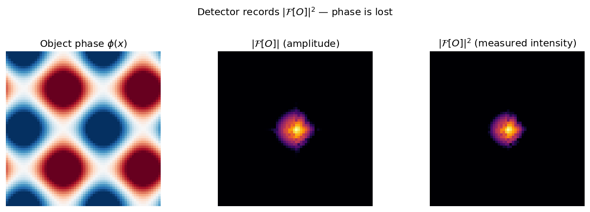
Left: the object phase \(\phi(x)\) varies across the specimen — this is the structural information. Centre: the Fourier-domain amplitude \(|\mathcal{F}[O]|\) retains spatial-frequency magnitudes but discards phase. Right: the detector records only \(|\mathcal{F}[O]|^2\) — the phase information is gone.
Overcoming the phase problem: redundancy is the key
- Single diffraction pattern: \(N^2\) measured intensities for \(N^2\) complex unknowns (\(2N^2\) real DOF) — under-determined. Infinitely many objects are consistent with one pattern.
- Ptychographic scanning: move the probe by a step smaller than the probe size. Each new position adds \(N_p^2\) new measurements while sharing most unknowns with the previous position. With enough overlap the system becomes massively over-determined.
- Concrete numbers: a 64×64 scan with 64×64-pixel diffraction patterns gives \(64^2 \times 64^2 \approx 16.7\,\text{M}\) measurements for an object of a few \(10^4\) pixels — hundreds of measurements per unknown. Rodenburg, John M. et al., (2007), doi:10.1103/PhysRevLett.98.034801
- Result: the phase can be recovered from magnitudes alone — no separate phase measurement needed. This is the same redundancy idea as a tomographic tilt series (Week 12), applied to phase.
Ptychography: overlapping probe positions
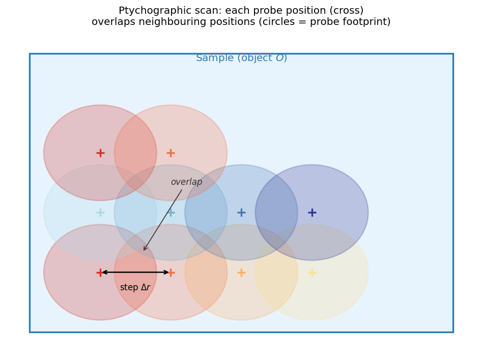
Schematic of a ptychographic scan: each cross marks a probe centre; coloured circles show the probe footprint. Adjacent probes overlap strongly, so each object point is illuminated by several probe positions — providing redundant constraints that enable unique phase recovery.
The ptychographic forward model
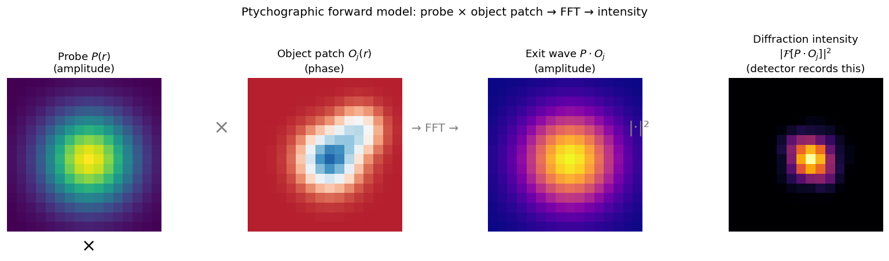
The four steps at scan position \(j\): (1) crop the object patch \(O_j(\mathbf{r})\); (2) multiply by the probe \(P(\mathbf{r})\) to form the exit wave; (3) FFT to the far field; (4) take \(|\cdot|^2\) to get the measured intensity. Steps 1–3 are reversible; step 4 is not — phase is lost.
\[I_j(\mathbf{k}) = \bigl|\mathcal{F}\bigl[P(\mathbf{r})\cdot O(\mathbf{r}-\mathbf{r}_j)\bigr]\bigr|^2\]
Iterative phase retrieval: ePIE intuition
- The core idea: alternate between two constraints.
- Fourier constraint: the exit wave’s Fourier amplitude must match the measured \(\sqrt{I_j}\). Replace amplitude, keep phase.
- Real-space constraint: update the object using the corrected exit wave. Propagate the correction back.
- One ePIE step at position \(j\):
- Predict: \(\psi_j = P \cdot O_j\) → \(\Psi_j = \mathcal{F}[\psi_j]\)
- Replace amplitude: \(\Psi_j' = \sqrt{I_j} \cdot e^{i\arg \Psi_j}\)
- Back-propagate: \(\psi_j' = \mathcal{F}^{-1}[\Psi_j']\)
- Update object: \(O_j \leftarrow O_j + \beta \frac{P^*}{|P|^2_{\max}}(\psi_j' - \psi_j)\)
- Loop over all positions in random order until the amplitude-consistency error stops falling. Maiden, Andrew M. et al., (2009), doi:10.1016/j.ultramic.2009.05.012
ePIE convergence: error vs iteration
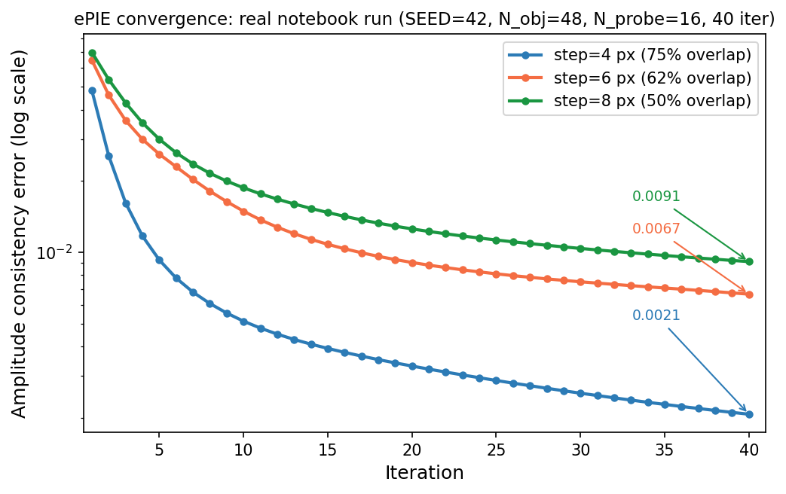
ePIE amplitude-consistency error vs iteration — output of week13_ptychography.ipynb (SEED=42, N_obj=48, N_probe=16, 40 iterations). Step 4 px (75 % overlap) converges to 0.0021 (~48× below the flat-phase start); step 6 px (62 %) to 0.0067; step 8 px (50 %) to 0.0091. More overlap, lower error.
The object model: from weak to strong phase
- Transmission function: a thin specimen multiplies the incident wave by \(O(\mathbf{r}) = e^{i\sigma V_p(\mathbf{r})}\), with projected potential \(V_p(\mathbf{r}) = \int V(\mathbf{r},z)\,dz\) and interaction constant \(\sigma\) (depends on beam energy).
- Weak-phase approximation (WPOA): if \(\sigma V_p \ll 1\) rad, \(O \approx 1 + i\sigma V_p\) — the forward model becomes linear in \(V_p\) (the basis of CTF theory and simple Fourier methods).
- Strong-phase approximation (SPA): keep the full exponential, \(\psi_{\text{exit}}(\mathbf{r}) = \psi_0(\mathbf{r})\,e^{i\sigma V_p(\mathbf{r})}\). Valid for phase shifts of several radians — heavy columns, thicker crystals.
- Key assumptions of SPA: the probe does not change shape inside the specimen (\(|\psi|^2\) conserved), no propagation or beam spreading inside the sample, pure phase object (no absorption).
- In the notebook: parameterising \(O = e^{i\phi}\) is the SPA — a hard constraint \(|O|=1\) built into the model.
When the strong-phase approximation breaks
- SPA fails for:
- thick specimens (roughly > 10–20 nm at typical STEM conditions): the probe changes shape while travelling through the sample;
- low beam energies (< ~60 keV): stronger scattering, shorter depth of field;
- strong scattering potentials (heavy elements, zone-axis channelling).
- Symptom in a reconstruction: phase no longer scales linearly with thickness; artefacts and “ghost” contrast at heavy columns; resolution degrades with thickness.
- The fix — multislice Cowley, J. M. et al., (1957), doi:10.1107/S0365110X57002194: cut the specimen into slices of thickness \(\Delta z\), each a thin phase screen, and propagate between them: \[\psi_{n+1} = p(\Delta z) \otimes \bigl[\psi_n \cdot e^{i\sigma V_n}\bigr], \qquad \mathcal{F}[p](\mathbf{k}, \Delta z) = e^{-i\pi\lambda\Delta z |\mathbf{k}|^2}\]
- Multislice ptychography: reconstruct all slices \(V_1\ldots V_N\) from the 4D-STEM data Maiden, Andrew M. et al., (2012), doi:10.1364/JOSAA.29.001606 — the forward model is a deep, differentiable chain of multiply → FFT → multiply by propagator → IFFT.
Phase object vs multislice: a picture
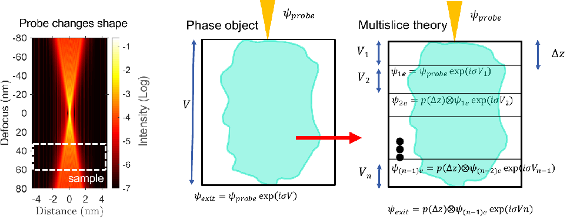
Left: the focused probe changes shape over tens of nm of defocus — comparable to the sample thickness (dashed box). Centre: the phase-object (SPA) model treats the whole specimen as one phase screen, \(\psi_{\text{exit}} = \psi_{\text{probe}}\,e^{i\sigma V}\). Right: multislice theory alternates transmission through thin slices \(V_n\) and Fresnel propagation \(p(\Delta z)\). Slide credit: D. Muller (M&M 2023), after Chen, Zhen et al. (2021), doi:10.1126/science.abg2533.
Depth sectioning, its missing wedge, and the thermal limit
- The propagator phase \(\pi\lambda\Delta z|\mathbf{k}|^2\) means depth information is carried only by the high transverse frequencies: \(\Delta z \propto 1/|\mathbf{k}_r|^2\).
- Low-frequency structure is nearly depth-invariant → a missing wedge in \(k_z\), just like limited-angle tomography (Week 12). Depth resolution of single-view multislice: a few nm vs < 0.5 Å laterally.
- Regularise along \(z\), e.g. with a Fourier-space weight \(W(\mathbf{k}) = 1 - \tfrac{2}{\pi}\arctan\!\bigl(\beta^2 k_z^2 / k_r^2\bigr)\).
- Resolution limit: in PrScO₃, multislice ptychography reaches ~20 pm — set by thermal vibrations of the atoms, not by the microscope. Chen, Zhen et al., (2021), doi:10.1126/science.abg2533
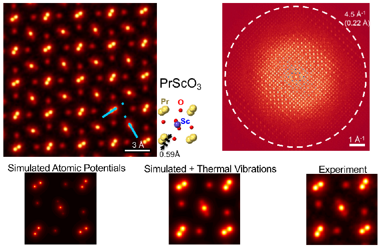
Beyond one view: ptychographic tomography
- Combine Week 12 and Week 13: reconstruct a phase projection (or multislice stack) at every tilt angle, then solve a tomography problem — or do both at once.
- Ptychographic atomic electron tomography: 34.5 million diffraction patterns → atomic-resolution tilt series of a double-wall carbon nanotube with an encapsulated ZrTe structure; revealed a previously unobserved ZrTe₂ phase. Pelz, Philipp M. et al., (2023), doi:10.1038/s41467-023-43634-z
- Multislice ptychographic tomography: 2 Å axial and 0.7 Å lateral resolution in a volume beyond the depth-of-field limit — a 13.5× axial improvement over single-view multislice. Romanov, Andrey et al., (2024), doi:10.1088/2515-7639/ad9ad2
- End-to-end: reconstruct the 3-D potential directly from the unaligned 4D-STEM tilt series, including alignment and a restricted tilt range — sub-Å near-isotropic resolution. You, Shengbo et al., (2024), doi:10.1088/1402-4896/ad9a1a
- Why this became possible: all of these are one big differentiable forward model optimised by gradient descent — next section.
Ptychography as loss minimisation
- Write down a loss over all scan positions \(j\): \[\hat{\phi} = \arg\min_{\phi} \; \hat{R}(\phi) = \sum_j \Bigl\|\, \bigl|\mathcal{F}[P\cdot O_j(\phi)]\bigr| - \sqrt{I_j}\,\Bigr\|_2^2 \;+\; \lambda\,R(\phi)\]
- Which data term? The noise model decides (Week 2):
- Gaussian noise on intensities → least squares on \(I\);
- Poisson counts → Poisson NLL \(\sum (\hat I - I\log\hat I)\);
- amplitude loss on \(\sqrt{I}\) ≈ variance-stabilised Poisson (Anscombe) — robust and the most common choice.
- Which parameters? Object \(\phi\) (or complex \(O\)), and optionally the probe \(P\), scan positions \(\mathbf{r}_j\), slice potentials \(V_n\), tilt angles…
- Which solver? Any gradient method from Week 4: GD, SGD over positions (mini-batches), Adam, L-BFGS.
- ePIE ≈ SGD with batch size 1 and a hand-derived step size \(\beta/|P|^2_{\max}\).
Automatic differentiation: write the forward model, get the gradient
def forward(phi, probe, rows, cols):
O = torch.exp(1j * phi) # SPA: pure phase object (hard constraint |O| = 1)
exit_waves = probe * O[rows, cols] # probe x all object patches at once
return torch.abs(torch.fft.fft2(exit_waves)) # predicted diffraction amplitudes
phi = torch.zeros(N, N, requires_grad=True)
opt = torch.optim.Adam([phi], lr=0.02)
for it in range(200):
loss = ((forward(phi, probe, rows, cols) - meas_amps) ** 2).sum() # data fidelity
loss = loss + lam_tv * tv(phi) # prior: one extra line
opt.zero_grad(); loss.backward(); opt.step() # autograd does the calculusloss.backward()differentiates through the FFT and the modulus — no hand-derived update rule. Kandel, Saugat et al., (2019), doi:10.1364/OE.27.018653- Same code pattern as training a network in Week 6 — only the “network” is now the physics.
ePIE vs autodiff gradient descent: same problem, two solvers
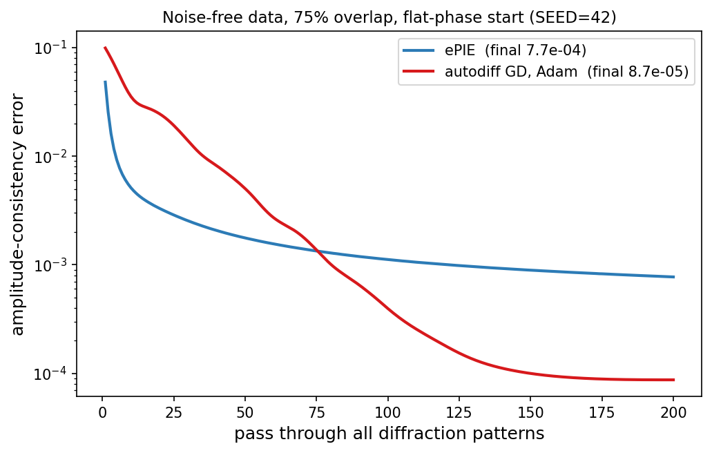
week13_ptychography.ipynb.| after 200 passes | ePIE | autodiff GD |
|---|---|---|
| amplitude error | \(7.7\times10^{-4}\) | \(8.7\times10^{-5}\) |
| aligned phase RMS | \(1.7\times10^{-3}\) rad | \(2.9\times10^{-4}\) rad |
| wall time (CPU) | 4.5 s | 9.3 s |
- ePIE is fast early (81 small updates per pass).
- Full-batch Adam is more precise late — the momentum + cosine schedule reach a 10× lower error.
What automatic differentiation buys
- Flexibility: probe refinement, position correction, partial coherence (mixed states), multislice, tilt series — each is “one more parameter or one more layer” in the forward model.
- Any loss: swap amplitude loss for Poisson NLL when dose is low; add regularisers (TV, positivity, a learned prior) as loss terms.
- Any optimiser: mini-batch SGD over scan positions scales to millions of patterns on GPUs.
- Composability: a trained denoiser, a generative prior or a physics residual plugs into the same computational graph — the bridge to the rest of today.
- Costs: memory (autograd stores intermediates of a deep multislice chain), hyperparameters (learning rate, schedule), local minima of a non-convex loss — initialisation still matters.
Low dose: a prior in one line of the loss
- Notebook exercise 2: Poisson noise at 100 e⁻ per diffraction pattern; aligned phase RMS error:
| method | phase RMS [rad] |
|---|---|
| ePIE, 40 iterations | 0.094 |
| autodiff GD, \(\lambda_{TV}=0\) (200 it.) | 0.103 |
| autodiff GD, \(\lambda_{TV}=1\) | 0.080 |
| autodiff GD, \(\lambda_{TV}=8\) | 0.140 |
- U-curve: too little prior → noise is fitted (variance); too much → the smooth phase blobs are flattened into plateaus (bias). Exactly the Week 12 \(\lambda\) trade-off.
- Early stopping is an implicit regulariser: ePIE stopped at 40 iterations beats unregularised GD run to convergence.
- At 10× the dose the optimal \(\lambda_{TV}\) drops (≈ 0.3): the weaker the data, the more the prior has to carry.
A brief history of resolution
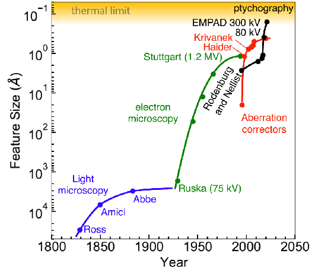
Resolution records in microscopy: light microscopy saturates at the Abbe limit; electron microscopy improved with voltage, then aberration correction; electron ptychography (EMPAD, 80–300 kV) now approaches the thermal-vibration limit. Slide credit: D. Muller; see Chen, Zhen et al. (2021), doi:10.1126/science.abg2533.
What ptychography buys: dose–resolution trade-off
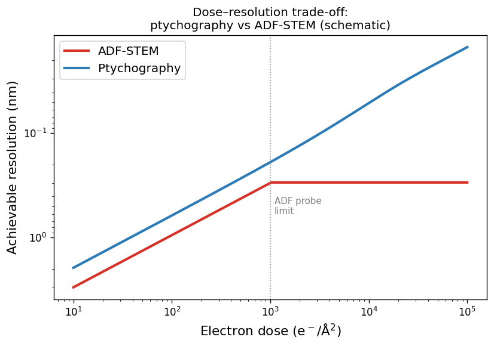
Schematic dose–resolution trade-off for ADF-STEM (red) and ptychography (blue); y-axis inverted (higher = finer). In the low-dose regime both scale as \(d \propto 1/\sqrt{\text{dose}}\), but ptychography uses all scattered electrons and achieves better resolution at equal dose. At high dose ADF saturates at the probe-size limit; ptychography keeps improving because it deconvolves the probe. Chen, Zhen et al., (2021), doi:10.1126/science.abg2533
Experimental parameters and quality control
- What you choose: probe size / defocus (aberration corrector settings), scan step (~20–40 % of the probe diameter), camera length (detector angular range ↔︎ real-space pixel size), total dose.
- Detector sampling: the diffraction pattern must be Nyquist-sampled; under-sampling aliases (Week 2).
- Partial coherence: model as mixed probe states, \(I_j = \sum_k |\mathcal{F}[P_k \cdot O_j]|^2\) — trivial to add in an autodiff framework.
- What you get: complex object \(O(\mathbf{r})\) (amplitude + phase), reconstructed probe(s), refined positions.
- Quality check: amplitude error decreasing smoothly and plateauing well below its start; residual consistent with Poisson noise; reconstruction stable across initialisations and data halves (a half-set comparison, like cryo-EM FSC). Maiden, Andrew M. et al., (2009), doi:10.1016/j.ultramic.2009.05.012
From hand-built regularisers to learned priors
- Week 12 — the regularised objective: \[\hat{\mathbf{x}} = \arg\min_{\mathbf{x}} \|H(\mathbf{x}) - \mathbf{y}\|^2 + \lambda R(\mathbf{x}) \quad\Longleftrightarrow\quad \text{MAP with } p(\mathbf{x}) \propto e^{-\lambda R(\mathbf{x})}\]
- The prior \(R\) encodes what a “reasonable” object looks like: Tikhonov (smooth), TV (piecewise constant), positivity, known symmetry. All hand-designed; none knows what real EM specimens look like.
- Two ways to do better today:
- Physics: put a known equation (PDE, conservation law, scattering model) into the loss or the architecture.
- Data: learn \(p(\mathbf{x})\) from many simulated or experimental images with a generative model.
- Bayesian view: posterior \(\propto\) likelihood × prior. The likelihood comes from the forward model and the noise model; the prior is the only place where “what specimens look like” enters.
The plug-and-play framework: any denoiser as a prior
- Insight: the proximal step of a regulariser \(R\) has the same form as Gaussian denoising. Kamilov, Ulugbek S. et al., (2023), doi:10.1109/MSP.2022.3199595
- Plug-and-play (PnP): replace the proximal step in ADMM / proximal gradient descent with any strong denoiser — BM3D, a DnCNN or a U-Net (Week 7) trained on EM images.
- Algorithm: alternate
- Data step: \(\mathbf{x} \leftarrow \mathbf{x} - \eta \nabla_{\mathbf{x}} \|H(\mathbf{x}) - \mathbf{y}\|^2\)
- Prior step: \(\mathbf{x} \leftarrow D_\sigma(\mathbf{x})\) (apply the learned denoiser)
- Result: the denoiser defines the prior implicitly. Diffusion models are the logical extreme: a denoiser trained at every noise level.
The landscape of modern priors
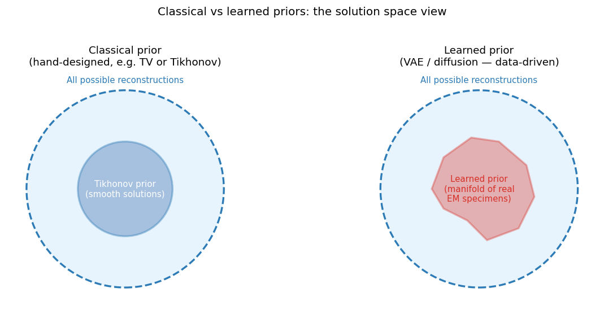
Left: a classical hand-designed prior confines solutions to a geometrically simple set (e.g. the smooth-function ball of Tikhonov). Right: a learned prior confines solutions to an irregular manifold shaped by the training data. Learned priors are more accurate for in-distribution specimens but more dangerous out of distribution.
Generative models as learned priors: overview
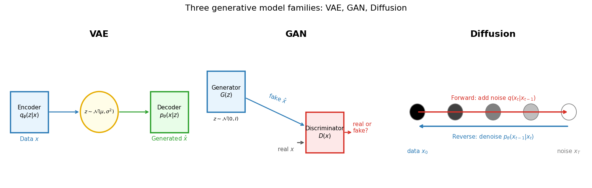
Three generative model families. VAE (left, Week 9): encoder maps data to a latent \(z\sim\mathcal{N}(\mu,\sigma^2)\), decoder generates. GAN (centre): generator \(G(z)\) tries to fool a discriminator \(D(x)\). Diffusion (right): a fixed forward process adds noise step by step; a network learns the reverse denoising.
GANs: an adversarial prior for sharp images
- Two networks in a minimax game Goodfellow, Ian et al., (2014): \[\min_G \max_D \; \mathbb{E}_{\mathbf{x}\sim p_{\text{data}}}[\log D(\mathbf{x})] + \mathbb{E}_{\mathbf{z}\sim\mathcal{N}(0,I)}[\log(1 - D(G(\mathbf{z})))]\]
- Generator \(G(\mathbf{z})\) maps noise to an image; discriminator \(D(\mathbf{x})\) outputs “real” probability.
- At the optimum \(D \equiv 1/2\) and \(G\) reproduces the data distribution.
- Why EM used GANs: sharp, realistic samples in one forward pass — the adversarial loss punishes the blur that MSE (and VAEs) produce. Conditional GANs (pix2pix-style) map low-dose → high-dose or low-res → high-res images.
- As a prior in reconstruction: search the latent space, \(\hat{\mathbf{z}} = \arg\min_{\mathbf{z}} \|H(G(\mathbf{z})) - \mathbf{y}\|^2\) — the solution lies on the generator’s manifold by construction.
- Failure modes: unstable training (two players, no single loss to monitor), mode collapse (few stereotyped outputs), and no likelihood — you cannot ask “how probable is this reconstruction?”
From GANs to diffusion: why the field moved
- Stable training: diffusion is trained with a plain regression loss (predict the noise) — one network, no adversary, loss curves you can read (Week 6 diagnostics apply).
- Mode coverage: the likelihood-based objective covers the whole data distribution — no mode collapse; samples are diverse.
- A score, not just a sampler: a trained diffusion model gives \(\nabla_{\mathbf{x}} \log p_t(\mathbf{x})\) at every noise level — exactly what Bayesian inverse problems need (next section). Song, Yang et al., (2021)
- Price: sampling takes tens to hundreds of network evaluations (vs one for a GAN); DDIM, latent diffusion, flow matching and consistency models reduce that.
- In materials science: diffusion now generates crystal structures (MatterGen, DiffCSP, MG Unit 12) and microstructures; in EM it drives denoising and super-resolution.
Diffusion models: forward noising, learned reverse
- Forward process (fixed): add Gaussian noise over \(T\) steps with schedule \(\beta_t\); closed-form marginal Ho, Jonathan et al., (2020) \[q(\mathbf{x}_t \mid \mathbf{x}_0) = \mathcal{N}\bigl(\sqrt{\bar\alpha_t}\,\mathbf{x}_0,\,(1-\bar\alpha_t)\mathbf{I}\bigr), \qquad \bar\alpha_t = \textstyle\prod_{s\le t}(1-\beta_s)\]
- Training (simple!): sample \(\mathbf{x}_0\), \(t\), \(\boldsymbol\epsilon\sim\mathcal{N}(0,I)\); form \(\mathbf{x}_t = \sqrt{\bar\alpha_t}\mathbf{x}_0 + \sqrt{1-\bar\alpha_t}\,\boldsymbol\epsilon\); minimise \[\mathcal{L} = \mathbb{E}\,\bigl\|\boldsymbol\epsilon - \boldsymbol\epsilon_\theta(\mathbf{x}_t, t)\bigr\|^2\] — a U-Net (Week 7) that predicts the noise.
- Sampling: start from \(\mathbf{x}_T\sim\mathcal{N}(0,I)\) and denoise step by step; coarse structure appears first, fine detail last.
- Score connection: \(\nabla_{\mathbf{x}_t}\log p_t(\mathbf{x}_t) \approx -\boldsymbol\epsilon_\theta(\mathbf{x}_t,t)/\sqrt{1-\bar\alpha_t}\).
Tweedie’s formula: a denoiser gives a clean-image estimate
- At any step \(t\) the network gives an estimate of the clean image (Tweedie): \[\hat{\mathbf{x}}_0(\mathbf{x}_t) = \frac{\mathbf{x}_t + (1-\bar\alpha_t)\,\nabla_{\mathbf{x}_t}\log p_t(\mathbf{x}_t)}{\sqrt{\bar\alpha_t}} = \frac{\mathbf{x}_t - \sqrt{1-\bar\alpha_t}\,\boldsymbol\epsilon_\theta(\mathbf{x}_t,t)}{\sqrt{\bar\alpha_t}}\]
- \(\hat{\mathbf{x}}_0\) is the posterior mean \(\mathbb{E}[\mathbf{x}_0 \mid \mathbf{x}_t]\) — blurry early (large \(t\)), sharp late.
- Why this matters for inverse problems: we can push \(\hat{\mathbf{x}}_0\) through the physical forward model \(H\) at every step and compare with the measurement \(\mathbf{y}\) — even though \(\mathbf{x}_t\) itself is noisy.
- This is the one ingredient that turns an unconditional generator into a reconstruction algorithm.
Diffusion posterior sampling: Bayes with a learned score
- Goal: sample the posterior \(p(\mathbf{x}\mid\mathbf{y}) \propto p(\mathbf{y}\mid\mathbf{x})\,p(\mathbf{x})\), not just one MAP estimate.
- Bayes for scores — the normaliser drops out when taking the gradient: \[\nabla_{\mathbf{x}_t}\log p_t(\mathbf{x}_t\mid\mathbf{y}) = \underbrace{\nabla_{\mathbf{x}_t}\log p_t(\mathbf{x}_t)}_{\text{learned prior score}} + \underbrace{\nabla_{\mathbf{x}_t}\log p_t(\mathbf{y}\mid\mathbf{x}_t)}_{\text{data consistency}}\]
- The problem: \(p_t(\mathbf{y}\mid\mathbf{x}_t)\) is intractable for noisy \(\mathbf{x}_t\).
- DPS approximation Chung, Hyungjin et al., (2023): \(p_t(\mathbf{y}\mid\mathbf{x}_t) \approx p(\mathbf{y}\mid\hat{\mathbf{x}}_0(\mathbf{x}_t))\) — evaluate the likelihood at the Tweedie estimate. For Gaussian noise: \[\nabla_{\mathbf{x}_t}\log p(\mathbf{y}\mid\mathbf{x}_t) \approx -\zeta\,\nabla_{\mathbf{x}_t}\bigl\|\mathbf{y} - H(\hat{\mathbf{x}}_0(\mathbf{x}_t))\bigr\|\]
- Works for non-linear \(H\) (phase retrieval, ptychography) because the gradient is computed by autodiff through the network and the forward model.
DPS: the algorithm
- Start from noise \(\mathbf{x}_T \sim \mathcal{N}(0, I)\).
- For \(t = T, \ldots, 1\):
- Prior step: predict noise \(\boldsymbol\epsilon_\theta(\mathbf{x}_t, t)\) and take the usual reverse-diffusion step → \(\mathbf{x}'_{t-1}\).
- Clean estimate: \(\hat{\mathbf{x}}_0 = (\mathbf{x}_t - \sqrt{1-\bar\alpha_t}\,\boldsymbol\epsilon_\theta)/\sqrt{\bar\alpha_t}\).
- Data step: \(\mathbf{x}_{t-1} = \mathbf{x}'_{t-1} - \zeta_t\,\nabla_{\mathbf{x}_t}\|\mathbf{y} - H(\hat{\mathbf{x}}_0)\|\) (autodiff through \(\boldsymbol\epsilon_\theta\) and \(H\)).
- Return \(\mathbf{x}_0\). Repeat with new random seeds → an ensemble of posterior samples.
- Compare with PnP: data step + denoiser step, but with a noise schedule and injected randomness → samples instead of one point estimate.
- Cost: one network forward + backward per step, 100–1000 steps per sample, several samples → minutes to hours per reconstruction.
DPS on a toy: what the data fix and what the prior decides
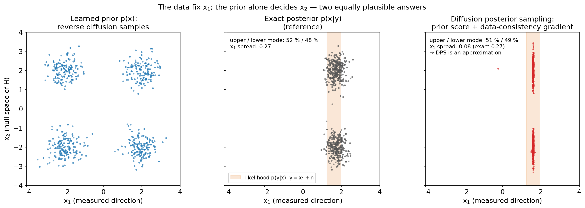
2-D toy with an exact prior (four Gaussian “structural variants”) and exact noised scores. We observe only \(x_1\) (a projection, \(H=[1\;0]\)); \(x_2\) lies in the null space of \(H\). Left: unconditional reverse diffusion reproduces the prior. Centre: exact posterior. Right: DPS samples. Generated by img/make_figures.py.
Generative models for EM: applications
- Denoising at low dose: learned priors preserve atomic contrast far better than BM3D/NLM at extreme noise; self-supervised training (Noise2Void / blind-spot) avoids paired clean data.
- Super-resolution & inpainting: fill in sub-sampled scans (dose reduction by sparse scanning, compressed sensing) — conditioned on measured pixels.
- Reconstruction priors: diffusion/PnP priors inside ptychography and tomography — especially to fill the missing wedge.
- Synthetic training data & inverse design: generate realistic micrographs for training segmentation (Weeks 7–8) and crystal/microstructure candidates (MG Unit 12).
- The common question in every case: did the network reveal structure or invent it? Low dose = weak likelihood = strong prior = high risk.
Physics-informed learning: the key idea
- Generative priors know data, not physics. Physics-informed learning adds what we know — a governing equation, a conservation law, a symmetry — to the objective. Raissi, Maziar et al., (2019), doi:10.1016/j.jcp.2018.10.045
- PINN loss for a network \(f_\theta\): \[\mathcal{L}(\theta) = \underbrace{\tfrac{1}{N}\textstyle\sum_i \|f_\theta(\mathbf{x}_i) - y_i\|^2}_{\text{data fidelity}} + \lambda\,\underbrace{\tfrac{1}{M}\textstyle\sum_m \|\mathcal{N}[f_\theta](\mathbf{x}_m)\|^2}_{\text{physics residual at collocation points}}\] with \(\mathcal{N}\) the differential operator (derivatives by autodiff w.r.t. the inputs).
- EM reading: data term = “reproduce the measurements”; physics term = “obey the known law” (e.g. Poisson’s equation for the potential, a diffusion equation for in-situ kinetics).
- Small-data advantage: the physics term constrains the solution where there are no data points — it acts as a very informative prior.
Physics-informed loss: schematic
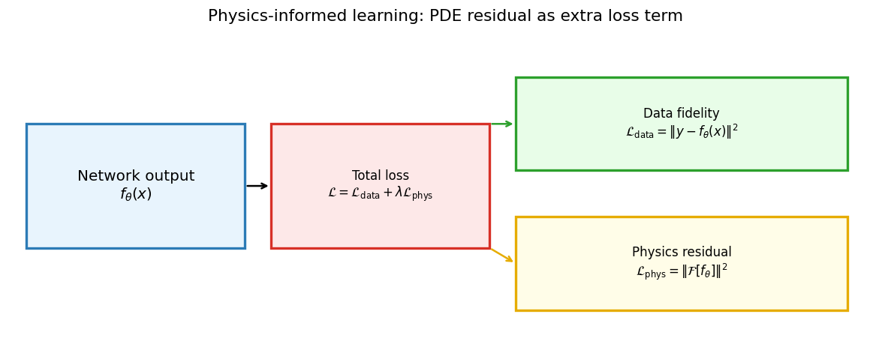
The physics-informed loss has two terms: data fidelity (network output matches measurements) and physics residual (network output satisfies a known operator). Both are differentiable, so backpropagation trains end-to-end; \(\lambda\) sets the balance.
Soft vs hard physics constraints
- Soft constraint (penalty): add \(\lambda\|\text{violation}\|^2\) to the loss. Flexible, but only approximately satisfied, and λ must be tuned — multi-term losses can be hard to optimise.
- Hard constraint (architecture / parameterisation): make violations impossible.
- Ptychography: \(O = e^{i\phi}\) guarantees \(|O|=1\) (pure phase object) — used in the notebook.
- Positivity: \(x = \text{softplus}(u)\); normalisation: softmax.
- Boundary conditions — Lagaris substitution Lagaris, Isaac G. et al., (1998): \(\hat u(x) = A(x) + B(x)\,N_\theta(x)\) with \(A\) satisfying the BC and \(B=0\) on the boundary.
- Symmetry: equivariant architectures (CNN = translation, GNN = permutation; Weeks 7 and 10).
- Rule: if a constraint is certainly true, hard-code it; if it is approximate (SPA for a 30 nm crystal), keep it soft — or better, upgrade the forward model (multislice).
Physics constraints: failure modes and trade-offs
- Wrong physics: a mis-specified model (wrong symmetry, SPA for a thick sample, ignoring inelastic scattering) pushes the reconstruction confidently toward the wrong answer — while still fitting the data.
- Optimisation pathologies: data and residual terms with very different scales and gradients; stiff PDEs; spectral bias of MLPs toward smooth solutions. Loss weighting and curriculum strategies help.
- Complementarity: physics knows the law but not the typical specimen; generative priors know typical specimens but not the law. Combining both (physics-constrained generation, DPS with a physical \(H\)) is the current frontier.
- Diagnostic: always monitor both terms. Small physics residual + large data error → over-trusting the physics. Small data error + large residual → fitting noise or unphysical solutions.
The honest risks: hallucination in EM
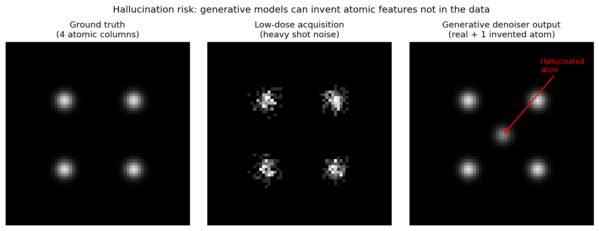
Hallucination risk: a low-dose HAADF image (centre) of four real atomic columns under heavy shot noise. A generative denoiser (right) recovers the four true columns but also invents a fifth (red arrow) at the centre — no basis in the ground truth (left). The learned prior places an atom where one “usually is”.
Distribution shift: when training data do not match the specimen
- Distribution shift: the prior was learned from \(p_{\text{train}}\); the specimen comes from \(p_{\text{test}} \neq p_{\text{train}}\).
- EM examples:
- GAN/diffusion trained on perfect SrTiO₃ applied to a specimen with a grain boundary → boundary smoothed away.
- Prior trained on Au nanoparticles applied to a Pt–Au alloy → Pt columns reconstructed with Au-like contrast.
- Prior trained on simulations applied to experiment → you partly measure how well the simulation matches reality (inverse crime in reverse).
- Detect: residual \(\mathbf{y} - H(\hat{\mathbf{x}})\) should look like noise; OOD scores (Week 11) on the input; disagreement between prior-based and prior-free (ePIE / TV) reconstructions.
- Mitigate: diverse training data, physics-based forward model in the loop (DPS rather than pure image-to-image), report uncertainty, validate key features independently.
When NOT to trust a generative reconstruction
- Red flags:
- Very low dose (< ~10² e⁻/Ų) and a suspiciously clean, noise-free result.
- A feature (defect, interface, precipitate) of a type absent from the training data.
- Structured residuals — the reconstruction does not reproduce the measurement statistics.
- The feature would be the headline result of your paper.
- Green flags:
- Ensemble agreement across posterior samples / seeds.
- Normalised residuals \(r_i = (y_i - H(\hat{\mathbf{x}})_i)/\sqrt{H(\hat{\mathbf{x}})_i}\) consistent with \(\mathcal{N}(0,1)\) (Poisson).
- Key features confirmed at higher dose or by an independent technique.
- Physics constraints enforced and a prior-free reconstruction qualitatively agrees.
Uncertainty quantification for reconstructions
- The core problem: a single reconstruction has no error bar; right and hallucinated answers look identical.
- Posterior ensembles: DPS / sampling with different seeds; pixel-wise mean and variance. Consistent features are data-supported; inconsistent ones are prior-driven. (Heuristic — DPS under-disperses, as the toy showed.)
- Classical alternatives: half-set reconstructions (odd/even scan positions), bootstrap over diffraction patterns, Laplace approximation around the MAP (Week 11 ideas).
- Physics-constrained uncertainty: a physics term shrinks the space of possible hallucinations — what remains is uncertainty among physically admissible structures. Pelz, Philipp M. et al., (2023), doi:10.1038/s41467-023-43634-z
- Report: method, training data, dose, residual map, uncertainty map, and which key assertion was validated independently.
Choosing a reconstruction method
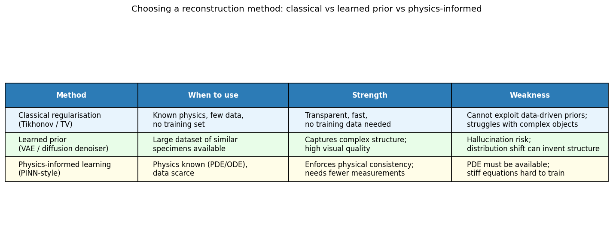
Decision table: classical regularisation (Tikhonov/TV) for well-understood physics and limited data; learned priors (GAN/diffusion) when a large dataset of similar specimens exists; physics-informed learning when governing equations are known and data are scarce. Combinations (physics + learned prior, e.g. DPS with a physical forward model) are the active research direction.
Limits: more powerful = more assumptions
- What no algorithm recovers: information the measurement never contained — null space of \(H\) (missing wedge, lost phase at zero overlap), frequencies beyond the dose-limited SNR, structure below the thermal-vibration blur.
- What a prior can do there: fill it with plausible content. Plausible ≠ measured.
- Hierarchy of assumptions:
- overlap alone (ePIE) → the forward model is right;
- TV → the object is piecewise smooth;
- physics residual → the equation is right;
- generative prior → the specimen looks like the training set.
- The meta-lesson: every step up the hierarchy buys quality at low dose and costs verifiability. State the assumptions, test them, report them.
Causality vs correlation in EM analyses
- ML finds associations; materials science needs mechanisms. A defect classifier trained on images from furnace A may learn “furnace A ↔︎ defects” — and fail on furnace B.
- The causal chain: processing → microstructure → properties → performance. Each arrow is a physical mechanism, not a correlation in a table.
- Reconstruction version: a generative prior “explains” the data with the most typical structure; typicality is a statistical, not a causal, argument.
- Intervention test: change the suspected cause and observe the effect — inject a corner artefact into a clean image (Week 7 shortcut demo), re-image at higher dose, re-measure a fresh specimen from the other furnace.
- Honest validation revisited (Week 4): splitting by specimen/session is a crude but effective guard against learning the specimen instead of the physics.
The E1–E6 explainability ladder — collected over 13 weeks
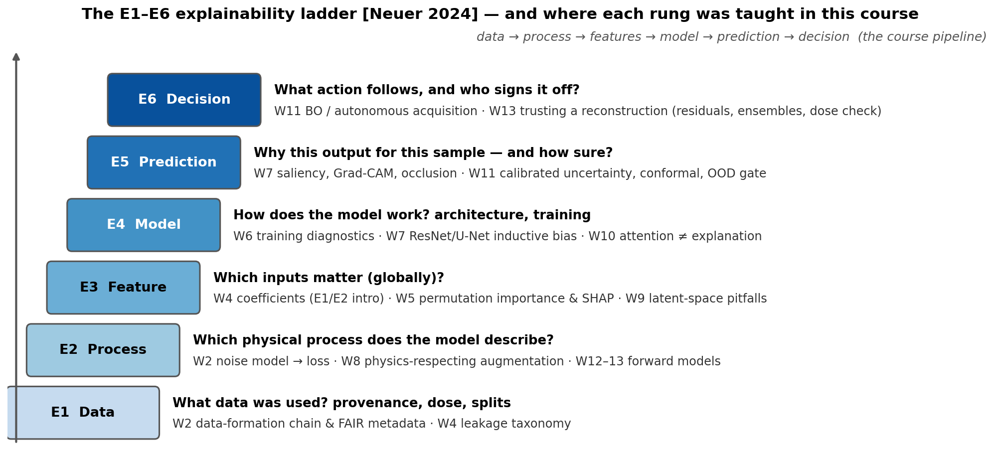
The six levels of explainability Neuer, Michael et al., (2024), ordered from data to decision, with the weeks in which each level was taught. Explainability was not a separate topic: every model family came with its own explanation tool.
Recurring trust failures across the course
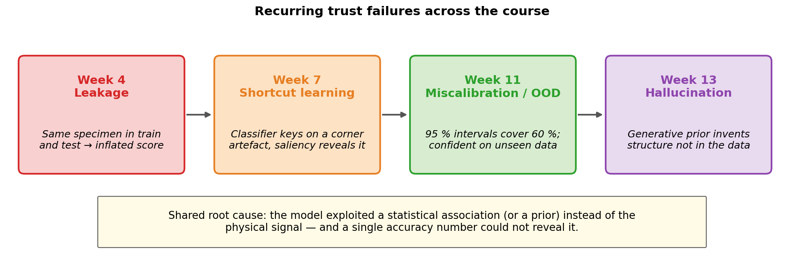
The four recurring trust failures: leakage (W4), shortcut learning (W7), miscalibration and out-of-distribution inputs (W11), hallucination (W13). All share one root cause: a statistical association or prior replaced the physical signal, and a single accuracy number could not reveal it.
The explainability & trust toolkit at a glance
| Method | Question it answers | Works on | Week |
|---|---|---|---|
| Coefficients / partial dependence | How does the output change with a feature? | Linear / additive models | W4 |
| Permutation importance, SHAP Lundberg, Scott M. et al., (2017) | Which features matter, globally and per sample? | Any model | W5 |
| Saliency, Grad-CAM Selvaraju, Ramprasaath R. et al., (2017), occlusion | Which pixels drove this prediction? | CNNs (occlusion: any) | W7 |
| Latent-space maps, t-SNE/UMAP | What structure did the model find? (beware distances) | AEs / VAEs / embeddings | W9 |
| Attention maps | Where did the transformer look? (≠ why) | Transformers | W10 |
| Calibration, conformal, OOD gate | How sure — and is this input in-distribution? | Any predictor | W11 |
| Residuals, posterior ensembles, half-sets | Is this reconstruction supported by the data? | Inverse problems | W12–13 |
- Sanity check every explanation — e.g. randomise the weights: if the saliency map does not change, it explains the image, not the model. Adebayo, Julius et al., (2018)
The 13-week arc as one methodology
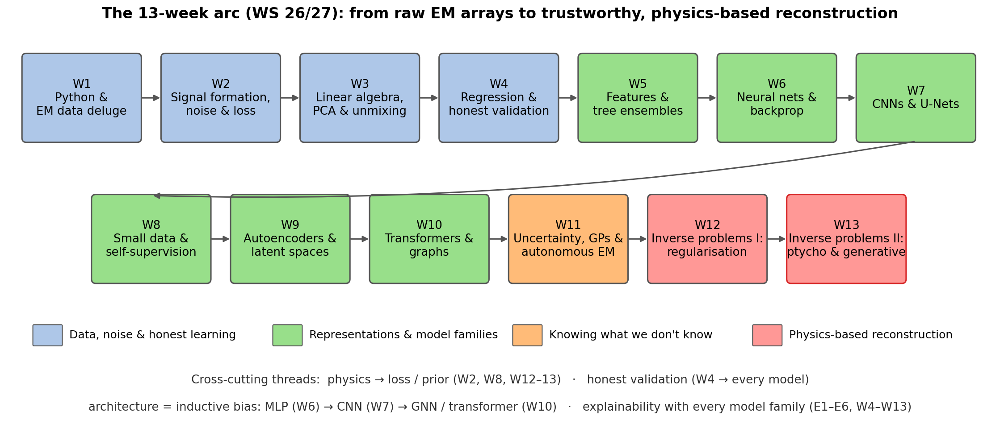
The WS 26/27 course arc: data, noise and honest learning (W1–4); representations and model families from trees to transformers (W5–10); knowing what we don’t know (W11); physics-based reconstruction (W12–13). Cross-cutting threads connect them.
What the course asks of you: the full pipeline
A complete EM data-science analysis contains all of these layers:
- Understand the data formation: detector, dose, noise model → loss (W2); metadata and provenance (E1).
- Represent: arrays, spectra, descriptors, graphs (W1, W3, W5, W10).
- Baseline first: mean → linear → trees → neural network (W4–5).
- Model with the right inductive bias: CNN/U-Net for grids, GNN for atoms, transformer for sets/sequences (W6–10); self-supervision for small data (W8).
- Validate honestly: splits by specimen/session, no preprocessing leakage (W4).
- Quantify uncertainty: calibration, conformal, GPs; OOD gate (W11).
- Explain and sanity-check: attribution + intervention test (W4–W10, E1–E6).
- Invert with the right forward model and an explicit prior: state what the prior contributes (W12–13).
- Report limits: what the model found and what it cannot tell you.
Five pillars of trustworthy EM data science
- Correct physics: the noise model decides the loss, the forward model decides the inversion. Never invert blindly.
- Honest validation: no leakage; group splits; report generalisation, not training accuracy.
- Calibrated confidence: 95 % intervals that contain the truth 95 % of the time — checked, not assumed.
- Faithful explanation: attributions that point at physical features, verified by sanity checks and interventions.
- Expert validation: a materials scientist checks that the explanation and the reconstruction make physical sense — no tool does this for you.
- The course in one sentence: collect the right data, build the right model, know what you don’t know, and be able to explain why you trust the answer.
Exam preparation
- Written exam: 60 % of the final grade (miniproject 40 %). Format and date as announced in Week 1 / on the course page.
- Question types:
- Conceptual — “Why does the weak-phase approximation linearise the forward model? When does the strong-phase approximation fail?”
- Application — “A saliency map highlights a scale bar. What do you conclude, and which experiment confirms it?”
- Calculation / derivation — noise model → loss (W2), PCA/SVD (W3), ridge/Tikhonov objective (W4/W12), backprop on a tiny graph (W6), GP posterior (W11), Fourier-slice / Radon (W12), ePIE update (W13).
- Judgement — “A colleague denoises a 50 e⁻/Ų image with a diffusion model trained on simulations. List three risks and one check for each.”
- Study material:
_shared/exam_mustknow.md— ≤ 10 must-know statements per week for all 13 weeks, plus the notebooks’ key numbers. - Strategy: for every week be able to (1) state the core idea in one sentence, (2) write the key equation, (3) name one EM application and one failure mode.
Miniproject: final checklist
- Specification:
_shared/miniproject.md— options A–E (segmentation, spectral unmixing & clustering, property regression, small imaging inverse problem, atom-column descriptors & defect classification). - Rubric (40 % of the grade): framing 15 % · methodology 25 % · uncertainty & validation 20 % · explainability 15 % · reproducibility 15 % · report 10 %.
- Explainability with a materials conclusion — e.g. Grad-CAM on a failure case (A), NMF endmembers as interpretable spectra (B), SHAP on descriptors (C/E), and for Option D: show what the prior contributes (reconstruct with and without regularisation, plot the residual).
- Uncertainty: calibrated intervals, reliability diagram or posterior/ensemble spread; honest group splits.
- Reproducibility:
jupyter nbconvert --to notebook --execute your_notebook.ipynbmust run end-to-end.
Self-study notebook
- Notebook:
notebooks/week13_ptychography.ipynb—
- Parts 1–4: synthetic phase object and probe → ptychographic forward model → ePIE (0.0991 → 0.0021 in 40 iterations).
- Part 5 (exercise 1): overlap sweep, step 4 / 6 / 8 px → 0.0021 / 0.0067 / 0.0091.
- Part 6 (new): the forward model in PyTorch; autodiff gradient descent with \(O=e^{i\phi}\) — amplitude error \(8.7\times10^{-5}\) and aligned phase error \(2.9\times10^{-4}\) rad after 200 iterations, vs \(7.7\times10^{-4}\) / \(1.7\times10^{-3}\) rad for ePIE.
- Part 7 (exercise 2, new): 100 e⁻/pattern Poisson data; TV prior in one line; find the best \(\lambda_{TV}\) and explain the U-curve.
- CPU only, < 1 min. Try next: add a probe update, or the Poisson NLL instead of the amplitude loss.
Summary
- Ptychography turns the phase problem into an over-determined inverse problem through overlapping probe positions; ePIE solves it by alternating projections.
- Object physics: weak phase (linear) → strong phase (one phase screen, \(O=e^{i\sigma V_p}\)) → multislice for thick samples; depth information has its own missing wedge; thermal vibrations set the final limit.
- Autodiff gradient descent solves the same loss with any parameters, losses and priors — the basis of multislice and tomographic ptychography.
- Generative priors: GANs (sharp, unstable, mode collapse) → diffusion (stable, diverse, gives a score); DPS adds a data-consistency gradient through Tweedie’s estimate and the physical forward model.
- Physics constraints: soft (loss) vs hard (parameterisation, architecture); wrong physics biases confidently.
- Trust: low dose = strong prior = hallucination risk. Residuals, ensembles, prior-free baselines and high-dose checks before you believe it.
- Synthesis: E1–E6 ladder and five pillars — more powerful = more assumptions.
Must-know takeaways (Week 13)
- Detectors record \(|\psi|^2\); ptychographic overlap makes phase retrieval over-determined: \(I_j = |\mathcal{F}[P\cdot O(\mathbf{r}-\mathbf{r}_j)]|^2\).
- ePIE: replace the Fourier amplitude with \(\sqrt{I_j}\), back-transform, update \(O_j \mathrel{+}= \beta\,P^*/|P|^2_{\max}\,(\psi'_j-\psi_j)\).
- SPA: \(\psi_{\text{exit}} = \psi_0\,e^{i\sigma V_p}\); fails for thick samples / strong scatterers → multislice (transmit, propagate, repeat).
- Ptychography = loss minimisation; autodiff differentiates through FFT and modulus, so probe, positions, slices and priors are just extra terms.
- Posterior score = prior score + likelihood score; DPS approximates the likelihood at the Tweedie estimate \(\hat{\mathbf{x}}_0\).
- Hard constraints (parameterisation) are exact but only as good as their physics; soft constraints need a λ.
- The weaker the data, the more the prior decides — check residuals, ensembles and a prior-free baseline before trusting a generative reconstruction.
Closing
- What you built over 13 weeks: a complete data-science toolkit for electron microscopy — from raw arrays and noise models, through trees, CNNs, transformers and Gaussian processes, to physics-based and generative reconstruction.
- The scientific obligation: every number, prediction, explanation and reconstruction your model produces — you are responsible for validating it against physics. The tools do not absolve the scientist.
- Next steps:
_shared/exam_mustknow.mdfor the exam,_shared/miniproject.mdfor the project, and the Ai4Mat companion notebooks for real datasets. - Thank you for 13 weeks of work — you are now equipped to contribute to the next generation of intelligent electron microscopy.
Continue
References

©Philipp Pelz - FAU Erlangen-Nürnberg - Data Science for Electron Microscopy